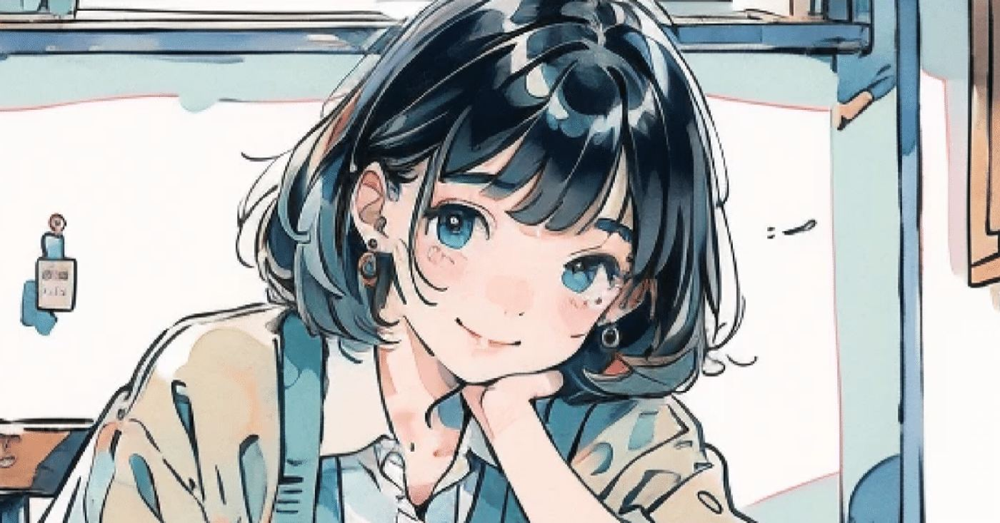
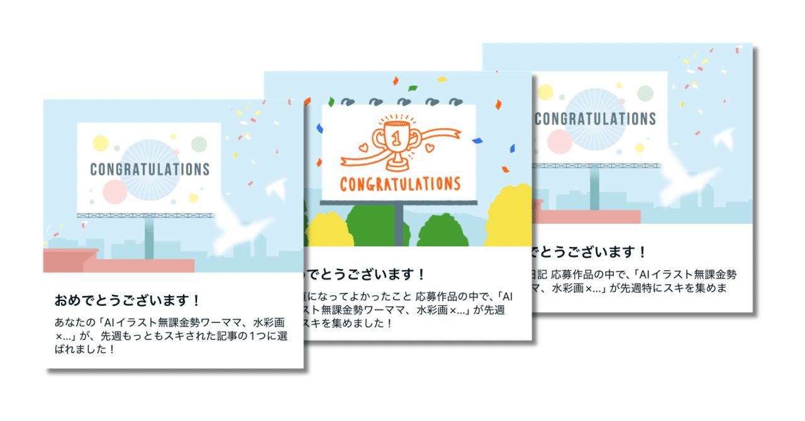
お久しぶりです。金田まりです。
今日は水彩画でラインアートです🎨
PMSやら息子の発熱でストレスが溜まったので、再びイラストに逃げました💨
記事書きたいなあ〜
前回の水彩画の描き方ですが、ちょっとずつ記事にまとめてます。
https://note.com/alive_sheep6563/n/n9f9140a1c38e
期間限定の無料公開→有料化する予定なので、
無料のうちにいっぱい読んでもらえたら嬉しいです。
そしてやはりOASOBIは楽しんでます。
共同運営マガジン「OASOBI会」からワードを引っ張ってきてます。
2月中に間に合わなかったけどせっかくなので投稿します！以下、選んだワードです。
【メンバー&ワード一覧】
スイさん ▷ 見栄っ張り
もとさん ▷ ポーズ
しもだんさん ▷ 参考書
夏目羊さん ▷ 受験
頑張る受験生のイラストをラインアートにしてみました✨
さっくり情報まとめ
• 使用ツール: SeaArt
• 使用LoRA: ラフ線画LoRA、水彩画LoRA
• 主なプロンプトのキーワード:
水彩、透明感、教室、トレンド
みんフォトにも投稿しますし、フリー素材としてご自由にお使いくださいませー！！
⚠️注意
記事内のイラストを、ご自身の作品として
周知・販売するのはご遠慮くださいね！
(そんな方はいないと思いますが念のため。)
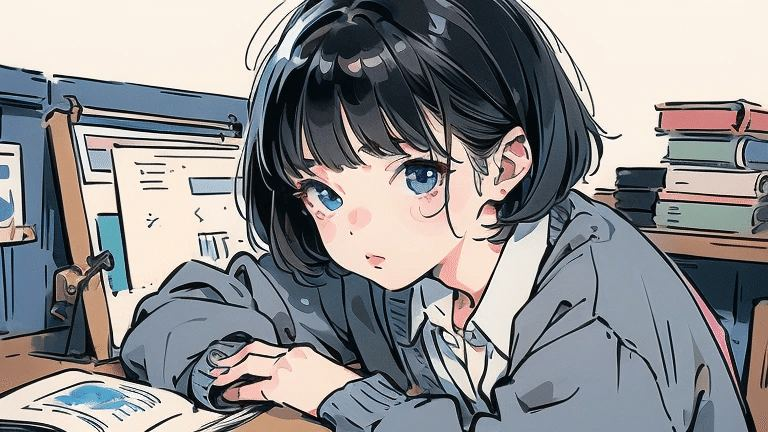
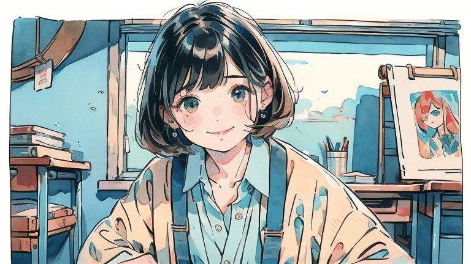
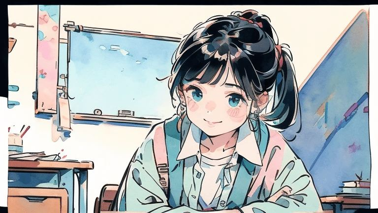
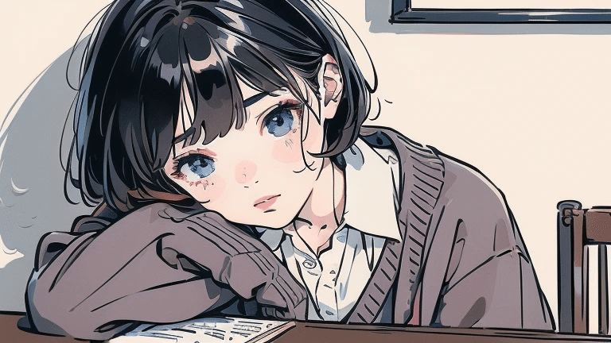
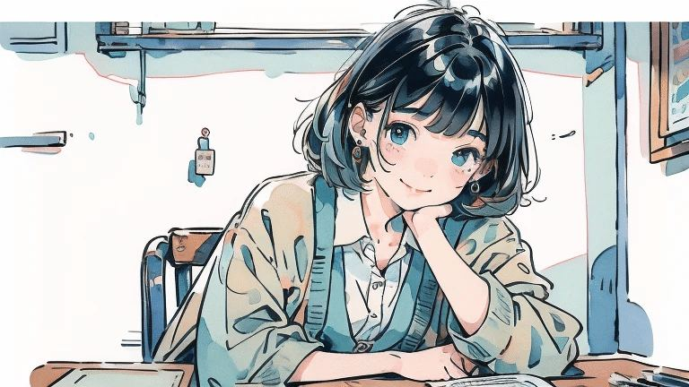
ところでピルって副作用あるらしいですね。
今まで鎮痛剤で誤魔化してきたんで、正直不安です🫠
アスペクト比1:1
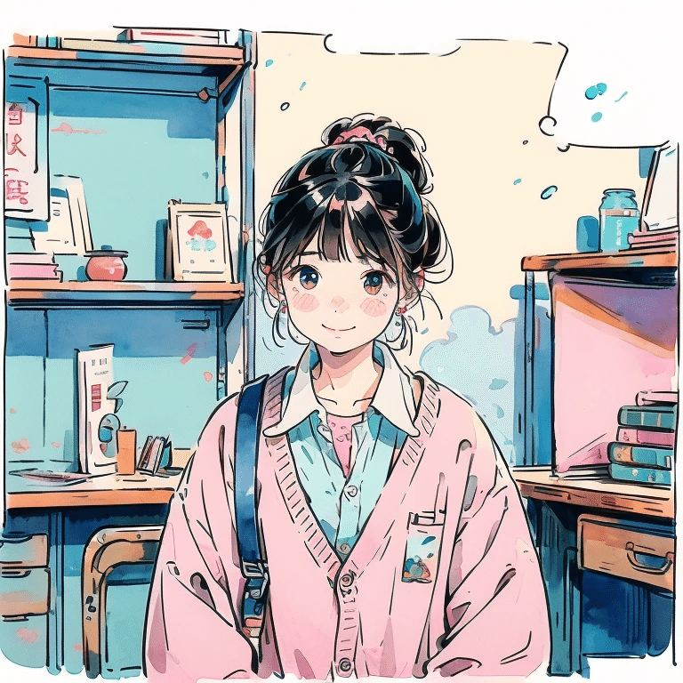
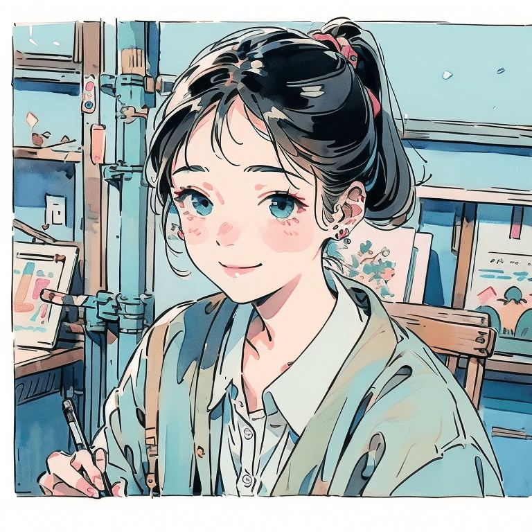
補足ですが、受験のアンニュイな雰囲気を、
ラフな線画モチーフのLoRAを強めに入れつつ
水彩画LoRAとプロンプトで透明感を強調。
笑顔が入ってるのはアンニュイばっかだとあれですからね…バッチリ合格だよ(見栄)！的な！
アスペクト比9:16
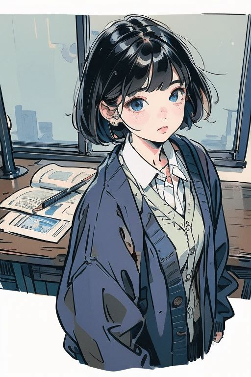
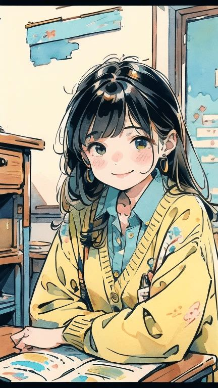
ちなみに画像の保存方法(スマホ)ですが、
お好きな画像をタップ / 長押し
↓
三点リーダー「・・・」を押す
↓
「画像を保存」を押す
でOKです🫶
AIイラストで「分身」を防ぐプロンプトのコツ
当初、プロンプトが不十分なせいなのか、
女の子１人と指定しても分身します。
私が双子(妹)だとバレてるんでしょうか。
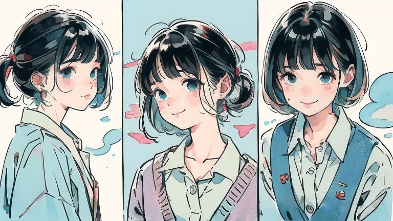
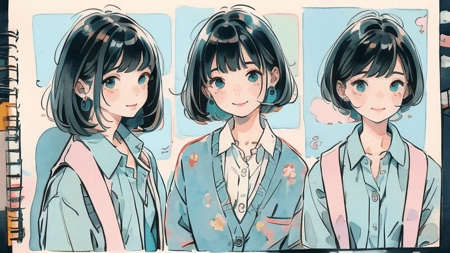
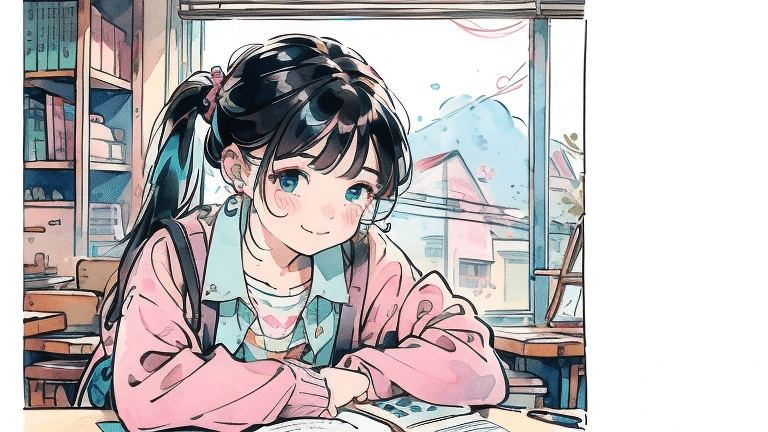
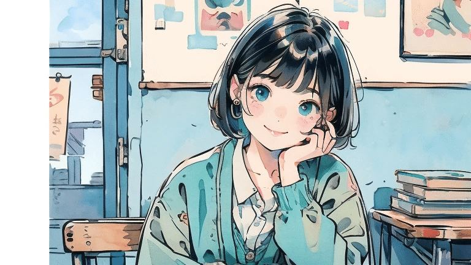
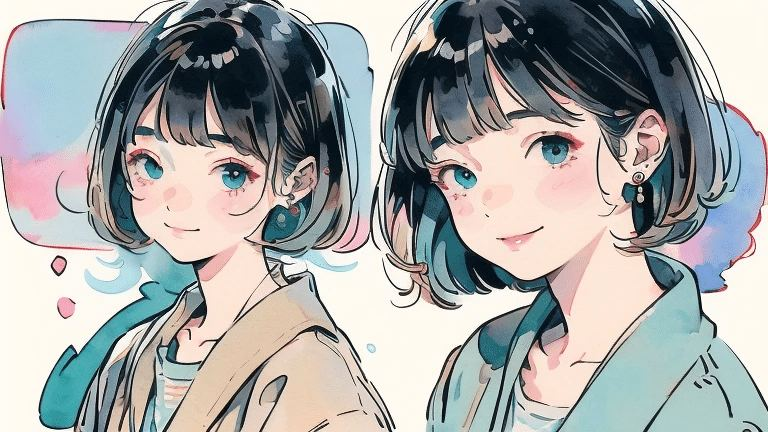
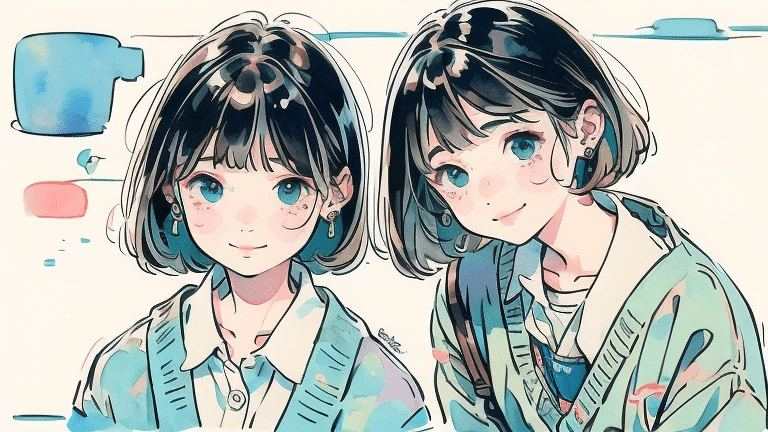
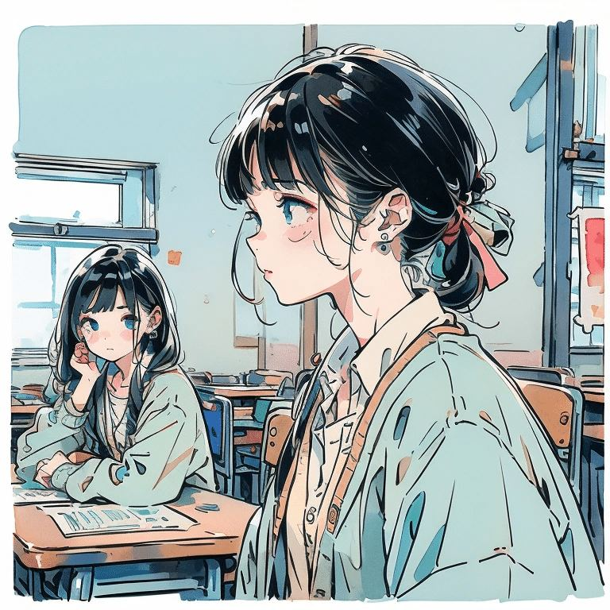
分身の理由は判明してまして、陰影をくっきりさせるためにプロンプトにいれてた
ハードシャドウが良くなかったようです。
削除して以下を追記。ちゃんと安定しました！
(1girl:1.2)SeaArtに限らず他のStable Diffusionベースもそうだと思うんですが、プロンプト構成がChatGTPやGeminiなどと違って結構独特なんですよね。
SeaArtは日本語入力OKなので使い始めたんですが、プロンプトはやっぱり英語表記の方が安定します。
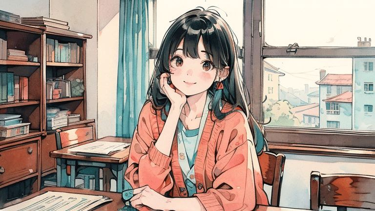
ちなみに今回のモデルを組み合わせが気に入ったので、別シチュのイラストを後日挑戦したいです。
ワードをお借りしたメンバー様達もご紹介✨
おすすめ記事を貼らせていただきました！
スイ(Sui)さん
スイさんのイラストって全部かわいいんですけど、取り急ぎサムネに一目惚れしました。
https://note.com/sui_ai_drawing/n/n4011d763b104?sub_rt=share_b
薄紫もとさん
さすが小説家！という惹き込まれる世界観。
謎の紳士の正体とは…！？
https://note.com/fresh_loris1944/n/ndf8e2088e2d2?sub_rt=share_b
しもだんさん
SUNOやDTMで作曲活動されてます！きのことたけのこから壮大な曲ができてました♪
https://note.com/shimodan/n/n25d12c4b9931?sub_rt=share_b
夏目羊さん
こういう考察できそうな深いイラスト描けるようになりたいです。タイトルもカッコいい✨
https://note.com/hitsuji_natsume/n/n740c0c883817
創作を全力で楽しむ！
共同運営マガジン「OASOBI会」はこちら▼
https://note.com/maiyu_x_ai/m/m96728bd6b208
ここまでお付き合いいただき感謝です。
まだまだ体調崩しやすい時期ですね。
無理せず過ごしましょう♪
次は3月7日(土)に投稿予定です。
ところで発熱してるのに、子どもってどうしてこんなに元気なんでしょう！？
発熱した子どもとの過ごし方、ぜひぜひ教えてください😂
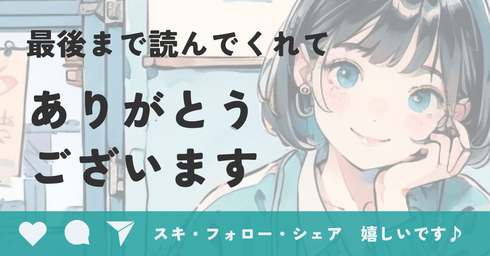